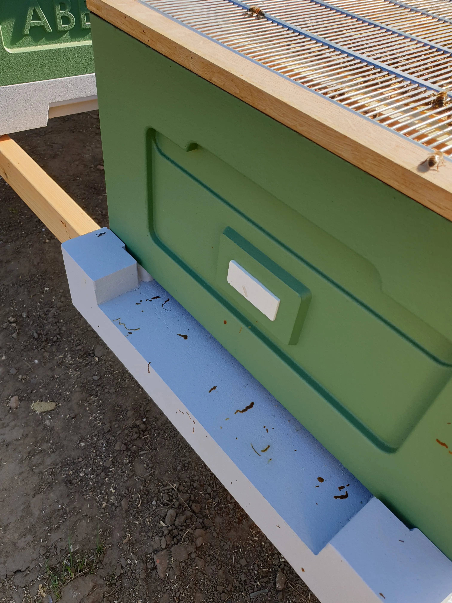

Adult bee disease guide
Nosema in Honey Bees
Last updated: 1 May 2026

Nosema is a microscopic gut infection affecting adult honey bees. It is often linked with stress, poor weather, long periods of confinement, damp conditions, poor nutrition and colonies that are already weak or under pressure.
The most visible sign often associated with Nosema is dysentery — brown streaking or spotting on frames, hive walls, comb or around the entrance. However, this can be misleading because not all dysentery is Nosema, and Nosema can sometimes be present without obvious staining.
This guide explains the common signs, how Nosema differs from simple dysentery, why it tends to appear in stressed colonies and what UK beekeepers can do to improve colony conditions.
Key signs of Nosema
- Brown streaks or spotting on frames, hive walls, comb or entrance
- Weak or dwindling colony
- Poor spring build-up
- Bees crawling or unable to fly properly
- Reduced lifespan of adult bees
- Poor queen performance or patchy colony development
Nosema is often suspected when a colony fails to build up normally in spring or appears weaker than expected despite having a queen and some stores.
What does Nosema look like?
Nosema itself cannot be confirmed just by looking at the outside of a hive. The disease is caused by microscopic spores inside the bee's gut, so visible symptoms are indirect.
The signs a beekeeper may notice include brown streaking, poor spring build-up, adult bee weakness, crawling bees or a colony that dwindles while neighbouring colonies improve. These signs should be treated as clues rather than proof.
What causes Nosema?
Nosema is caused by microsporidian parasites, including Nosema apis and Nosema ceranae. They affect the adult bee gut and can reduce bee lifespan and colony performance.
- Cold, damp conditions
- Long periods of confinement
- Poor nutrition or lack of forage
- Stress from varroa, weak colonies or disturbance
- Old comb and poor hive hygiene
Is Nosema serious?
Nosema can be serious, but it often weakens colonies gradually rather than causing sudden visible collapse. It is most noticeable when colonies fail to build up properly after winter or appear to dwindle during periods of stress.
A strong colony in good conditions may recover as weather improves and new healthy bees replace older infected bees. A weak colony with poor food, damp, varroa pressure or failing queen performance may struggle for longer.
Nosema vs dysentery
Dysentery means bees are passing faeces where they normally would not, often on the hive front, frames or comb. It can be linked with Nosema, but it can also happen because of poor-quality stores, fermented feed, prolonged confinement, stress or digestive upset.
For that reason, brown streaking should not be treated as a confirmed Nosema diagnosis on its own. Look at the wider pattern: colony strength, weather, stores, ventilation, hygiene, varroa pressure and whether neighbouring colonies are behaving normally.
What to do if you suspect Nosema
- Improve ventilation and reduce damp conditions.
- Check food quality and remove suspect or fermented feed where appropriate.
- Ensure good nutrition and access to forage when conditions allow.
- Replace old or contaminated comb as part of good brood comb management.
- Maintain strong colonies and avoid allowing weak colonies to struggle for too long.
- Review varroa history because multiple stress factors often overlap.
What not to do
- Do not assume all dysentery is Nosema.
- Do not ignore ongoing colony weakness or poor spring build-up.
- Do not keep colonies in damp, poorly ventilated conditions.
- Do not overlook other causes of crawling bees or dwindling colonies.
Nosema FAQ
No. Nosema is not a notifiable disease in the UK.
Strong colonies in good conditions may recover, especially when stress factors are removed and healthy young bees replace older infected bees.
No. Dysentery can occur for other reasons, and Nosema can be present without obvious external streaking.
It is often suspected in late winter or early spring when colonies are stressed, confined, damp or failing to build up properly.
Image credits
Disease reference images on this page are courtesy of The Animal and Plant Health Agency (APHA), Crown Copyright.